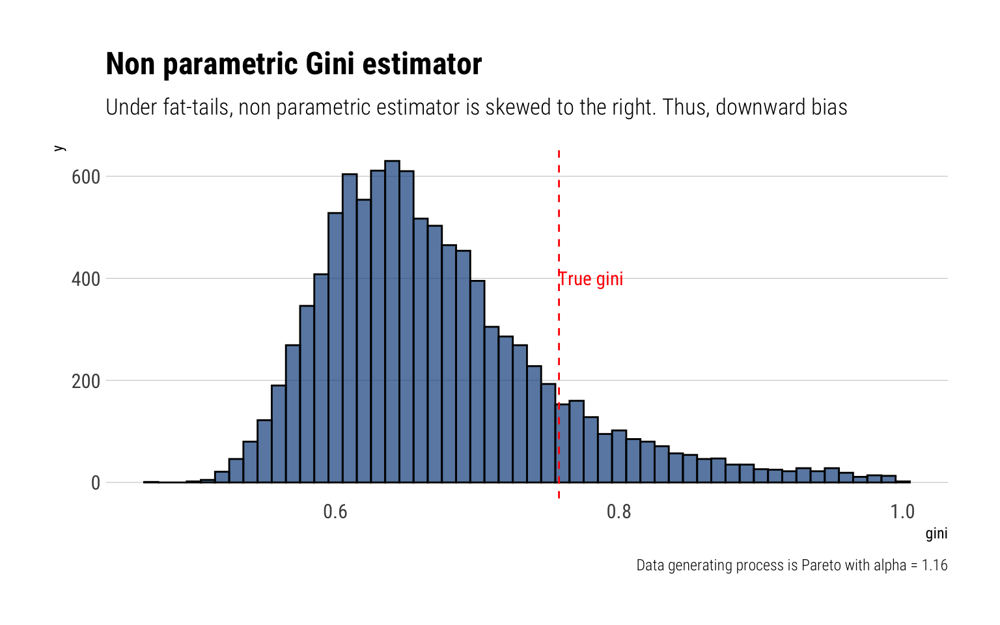
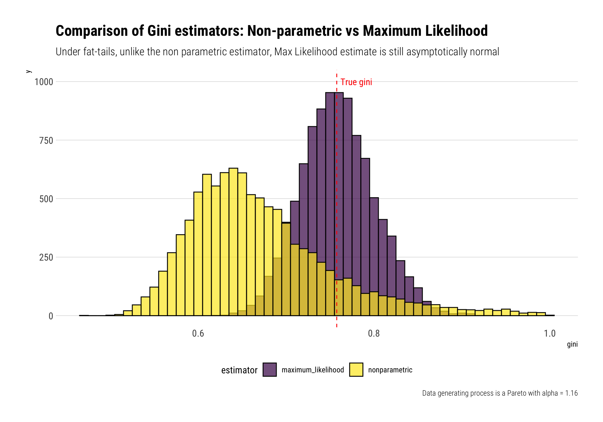

I have recently been exploring Nassim Taleb’s latest technical book: Statistical Consequences of Fat Tails. In this blogpost, I’ll follow Taleb’s exposition of the Gini Index under fat-tails in Chapter 13 of his book.
Intuitively, if we use the “empirical distribution” to estimate the Gini Index, under fat-tails, we underestimate the tail of the distribution and thus underestimate the Gini index. This is yet another example of how we fool ourselves when we are using the “empirical” distribution. Instead, Taleb recommends first understanding the tail behavior of the “Gini Index” by estimating the tail index of the distribution with Maxmimum Likelihood and then using the functional form of the maximum likelihood estimator for the Gini Index.
What is the Gini Index?
The Gini index is a measure of concentration commonly used in the income and wealth inequalities discussions. The stochastic representation of the Gini \(g\) is:
where ( X^{} ) and ( X^{} ) are i.i.d. copies of a random variable ( X ) with c.d.f. ( F(x) (2020-06-26-gini-index-under-fat-tails_files/figure-html/lognormal-1.png){width=768} ::: :::
Fat-tails: Non-parametric estimator
However, when the data-generating process of \(X\) is in the MDA of the Fréchet (i.e., it’s a fat-tailed variable), the non-parametric estimator of the Gini Index loses its properties of normality. Indeed, the limiting distribution of the non-parametric index becomes a skewed-to-the-right \(\alpha\)-stable law. Thus, the non-parametric estimate underestimates the true Gini Index.
This can be checked with Monte-Carlo simulations. I’ll perform \(10^4\) Monte-Carlo experiments: in each of them, I’ll generate a 1000 samples from a Pareto with \(\alpha = 1.16\). Then, I’ll calculate the Gini estimate using the non-parametric estimator.
Given this Pareto, the “true” Gini is thus:
\[
g = \dfrac{1}{2\alpha -1} = 0.7575758
\]
rpareto <-function(n) { alpha <-1.16 (1/runif(n)^(1/alpha)) # inverse transform sampling}crossing(experiment =1:10^4,sample_size =1000) %>%mutate(data =map(sample_size, ~rpareto(.)),gini =map_dbl(data, ~gini(.))) -> gini_paretogini_pareto %>%ggplot(aes(gini)) +geom_histogram(binwidth =0.01, color ="black", fill ="dodgerblue4", alpha =0.7) +geom_vline(aes(xintercept =0.7575758), color ="red", linetype =2) +annotate("text", x =0.78, y =400, label ="True gini", color ="red", family =theme_get()$text[["family"]]) +labs(title ="Non parametric Gini estimator",subtitle ="Under fat-tails, non parametric estimator is skewed to the right. Thus, downward bias",caption ="Data generating process is Pareto with alpha = 1.16")

Therefore, under fat-tails, the non-parametric Gini estimator will approach its true value more slowly, and from below.
The Maximum Likelihood alternative
A better alternative when working with fat-tails, it’s to first estimate the tail and then derive your quantity of interest. Indeed, one does not need too much data to derive the properties of the tail. With a Pareto, for example, the Maximum Likelihood estimator for the tail exponent follows an inverse Gamma distribution that rapidly converges to a Gaussian tightly around the true \(\alpha\). Therefore, one can reliably estimate the tail exponent of the Pareto and thus understand the properties of the distribution with relatively few data.
The ML estimator for the tail exponent of a Pareto is thus:
\[
\widehat \alpha = \frac{n}{\sum _i \ln (x_i) }
\] Then, we can derive our Maximum Likelihood estimate for the Gini Index:
\[
g = \dfrac{1}{2\widehat \alpha -1}
\]
Indeed, Taleb shows that this estimator for the Gini Index is not just asymptotically normal, but also asymptotically efficient. We can test for these using our Monte-Carlo simulations. For each of our simulated datasets, we can derive our Maximum Likelihood estimate and then derive our Maximum Likelihood estimate for the Gini Index.
estimate_alpha_ml <-function(observations) { alpha <-length(observations)/sum(log(observations))if (alpha <1) { alpha <-1.0005 } alpha}gini_pareto %>%mutate(alpha_ml =map_dbl(data, ~estimate_alpha_ml(.)),gini_ml =1/(2*alpha_ml -1)) -> gini_paretogini_pareto %>%rename(nonparametric = gini,maximum_likelihood = gini_ml) %>%pivot_longer(c(nonparametric, maximum_likelihood), names_to ="estimator", values_to ="gini") %>%ggplot(aes(gini, fill = estimator)) +geom_histogram(binwidth =0.01, color ="black", alpha =0.7,position ="identity") +geom_vline(aes(xintercept =0.7575758), color ="red", linetype =2) +annotate("text", x =0.78, y =1000, label ="True gini", color ="red", family =theme_get()$text[["family"]]) +scale_fill_viridis_d() +theme(legend.position ="bottom") +labs(title ="Comparison of Gini estimators: Non-parametric vs Maximum Likelihood",subtitle ="Under fat-tails, unlike the non parametric estimator, Max Likelihood estimate is still asymptotically normal",caption ="Data generating process is a Pareto with alpha = 1.16")

Conclusion
When the underlying distribution is fat-tailed, which is always in the case of income or wealth, the non-parametric estimator for the Gini index is skewed to the right and thus underestimates the true Gini index. In this case, it is a much statistically sound strategy to first estimate the tail behavior of the distribution with Maximum Likelihood and then estimate the Gini Index with its plug-in estimator.